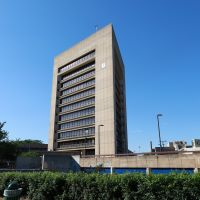
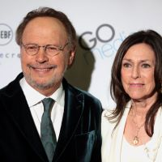

This is the college Billy Crystal attended with his wife.
Crystal was born at Doctors Hospital on the Upper East Side of Manhattan, and initially raised in
the Bronx. As a toddler, he moved with his family to 549 East Park Avenue in Long Beach, New York,
on Long Island. He and his older brothers Joel, who later became an art teacher, and Richard,
nicknamed
Rip, were the sons of Helen (née Gabler), a housewife, and Jack Crystal, who owned and operated the
Commodore
Music Store, founded by Crystal's grandfather, Julius Gabler. Crystal's father was also a jazz
promoter,
a producer, and an executive for an affiliated jazz record label, Commodore Records, founded by
Crystal's
uncle, musician and songwriter Milt Gabler. Crystal is Jewish (his family emigrated from Austria,
Russia,
and Lithuania), and he grew up attending Temple Emanu-El (Long Beach, New York) where he had his
bar
mitzvah. The three young brothers would entertain by reprising comedy routines from the likes of Bob
Newhart,
Rich Little and Sid Caesar records their father would bring home. Jazz artists such as Arvell Shaw,
Pee Wee
Russell, Eddie Condon, and Billie Holiday were often guests in the home. With the decline of
Dixieland jazz
and the rise of discount record stores, in 1963, Crystal's father lost his business and died later
that year
at the age of 54 after having a heart attack. His mother died in 2001.
After graduating from Long Beach High School in 1965, Crystal attended Marshall University in
Huntington,
West Virginia, on a baseball scholarship, having learned the game from his father, who pitched for
St. John's
University.[citation needed] Crystal never played baseball at Marshall because the program was suspended
during
his first year. He did not return to Marshall as a sophomore, instead deciding to stay in New
York to be
close to his future wife. He studied acting at HB Studio. He attended Nassau Community College with
her and
later transferred to New York University, where he was a film and television directing major. He
graduated from NYU
in 1970 with a BFA from its then School of Fine Arts. One of his instructors was Martin
Scorsese, while
Oliver Stone and Christopher Guest were among his classmates.
Acting Roles
Billy Crystal and his wife smiling for a picture.
Crystal's first film role was in Joan Rivers' 1978 film Rabbit Test, the story of the "world's first
pregnant man."
Crystal appeared briefly in the Rob Reiner "rockumentary" This Is Spinal Tap (1984) as Morty The
Mime, a waiter
dressed as a mime at one of Spinal Tap's parties. He shared the scene with a then-unknown, non-speaking
Dana Carvey,
stating famously that "Mime is money." He later starred in the action comedy Running Scared (1986)
opposite
Gregory Hines.
He reunited with director Rob Reiner in The Princess Bride (1987), in a comedic supporting role as
"Miracle Max".
Reiner got Crystal to accept the part by saying, "How would you like to play Mel Brooks?" Reiner also
allowed
Crystal to ad-lib, and his parting shot, "Have fun storming the castle!" is a frequently quoted line.
Critic
Roger Ebert described Crystal as a highlight of the film writing "the funniest sequences in the film
stars Billy
Crystal and Carol Kane, both unrecogizable behind makeup, as an ancient wizard and crone who specialize
in bringing
the dead back to life".
Reiner directed Crystal for a third time in the romantic comedy When Harry Met Sally... (1989). Crystal
starred
alongside Meg Ryan, Bruno Kirby and Carrie Fisher in a script written by Nora Ephron. The Hollywood
Reporter praised
the film and Crystal's performance writing, "Crystal’s lustrous, deeply-shaded performance is certain to
win him
legions of new fans; indeed, his prowess as a comic reaches its deepest human dimension here."
Crystal was
nominated for the Golden Globe Award for Best Actor – Motion Picture Musical or Comedy losing to Morgan
Freeman in
Driving Miss Daisy (1989). The film has since become an iconic classic for the genre and is Crystal's
most celebrated
film. In 2019 the BBC named the film the greatest romantic comedy of all time.
Crystal has received numerous accolades including six Primetime Emmy Awards for Outstanding Individual
Performance in a Variety or Music Program as the host of the 31st Annual Grammy Awards (1989), 63rd
Academy
Awards (1991), and 70th Academy Awards (1998) and the Outstanding Writing for a Variety Series for
writing
his comedy special Midnight Train to Moscow (1990), and the 63rd Academy Awards and 64th Academy Awards
(1992).
For his Broadway debut, his one man show 700 Sundays (2005), he won the Tony Award for Best Special
Theatrical
Event, and the Drama Desk Award. He received further Tony nominations for Best Actor in a Musical
and Best
Book of a Musical for Mr. Saturday Night (2022).
He received nominations for three Grammy Awards for Best Comedy Album for You Look Marvelous (1986), Best
Spoken Word Album for Still Foolin' Em (2014), and Best Musical Theatre Album for Mr. Saturday Night
(2023).
He also received three Golden Globe Award nominations for Best Actor in a Motion Picture Musical or
Comedy for his performances in the romantic comedy When Harry Met Sally... (1989), the western comedy
City
Slickers (1991), and Crystal's directorial debut Mr. Saturday Night (1992).
He has also received numerous honors including a star on the Hollywood Walk of Fame in 1991, and was
awarded
with the Mark Twain Prize for American Humor in 2007 where he was honored by Robin Williams, Whoopi
Goldberg,
Robert De Niro, Martin Short, and Rob Reiner at the John F. Kennedy Center for Performing Arts in
Washington D.C.
He was made one of the Disney Legends in 2013 and also received the Critics' Choice Lifetime Achievement
Award in
2022 and the Kennedy Center Honors in 2023.